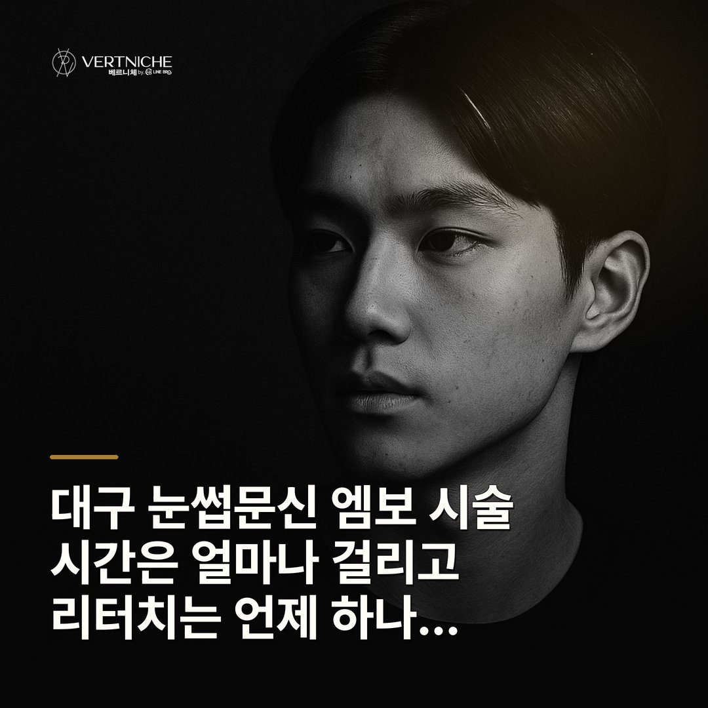
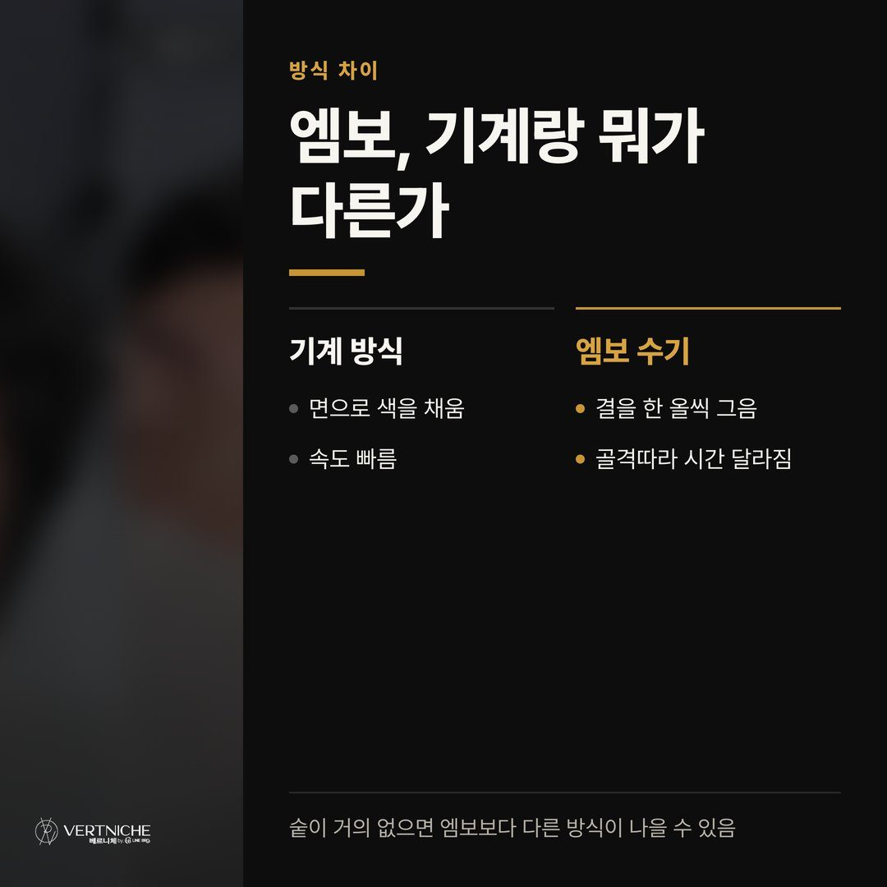
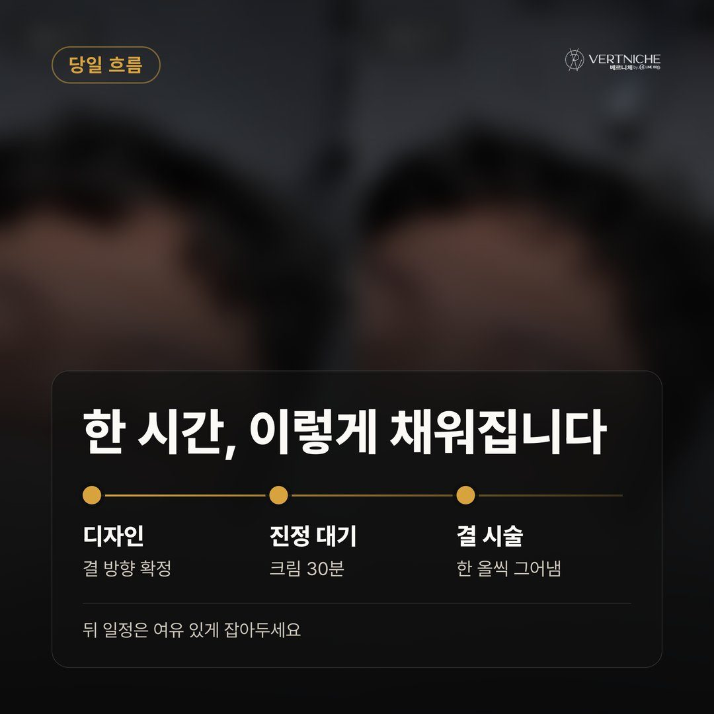
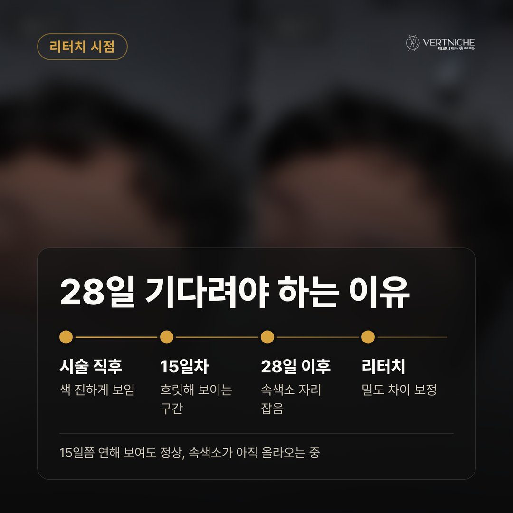
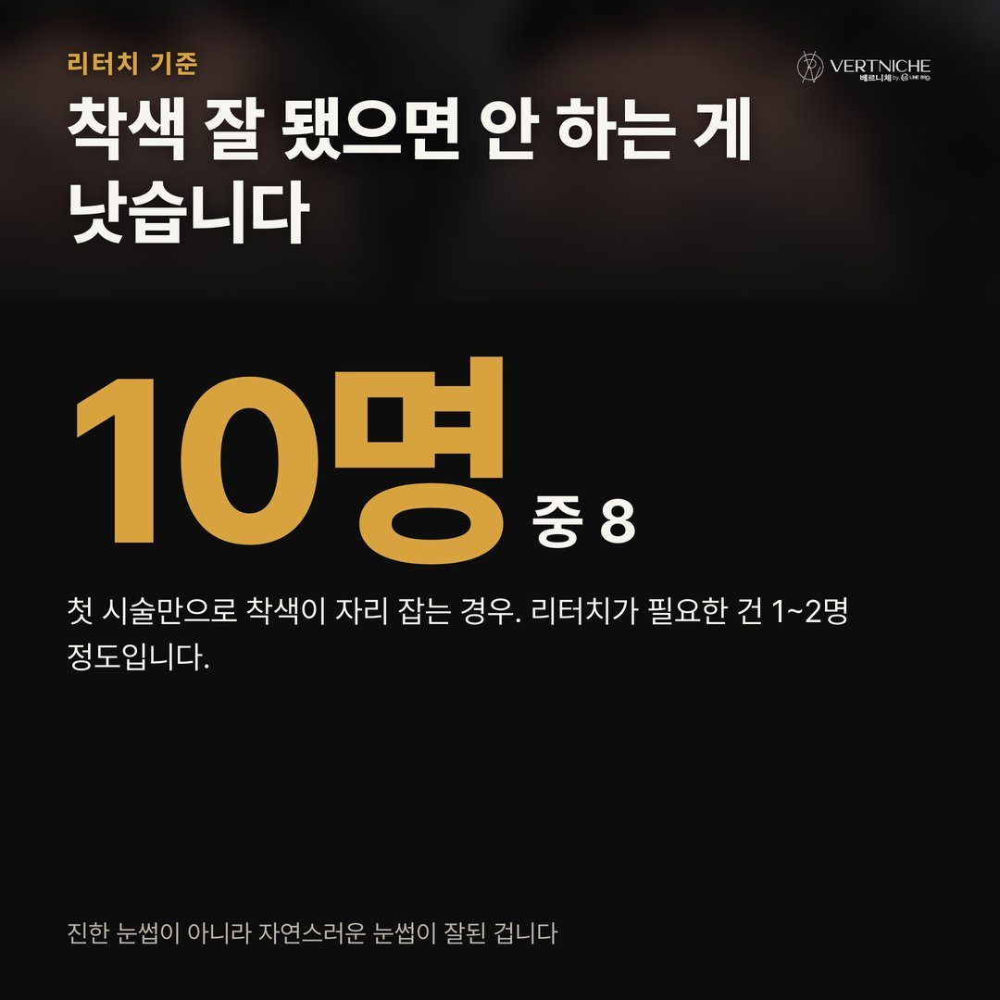
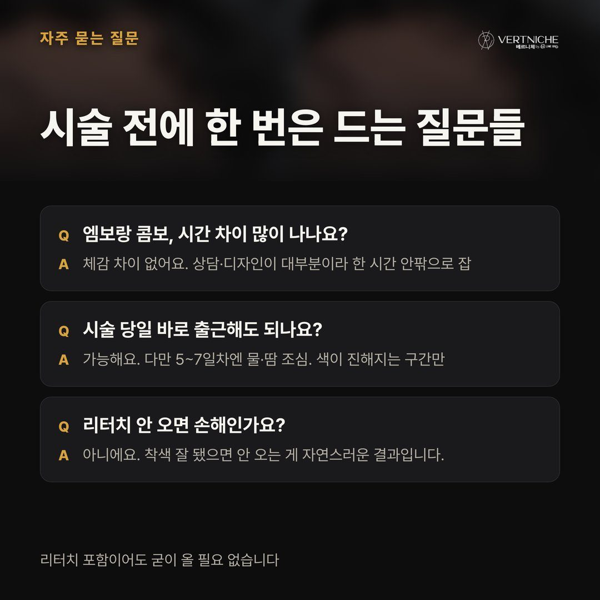
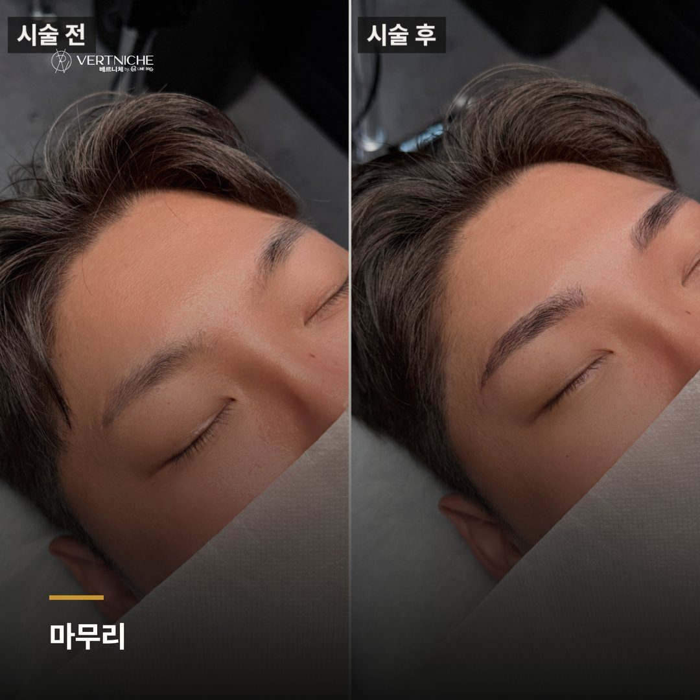
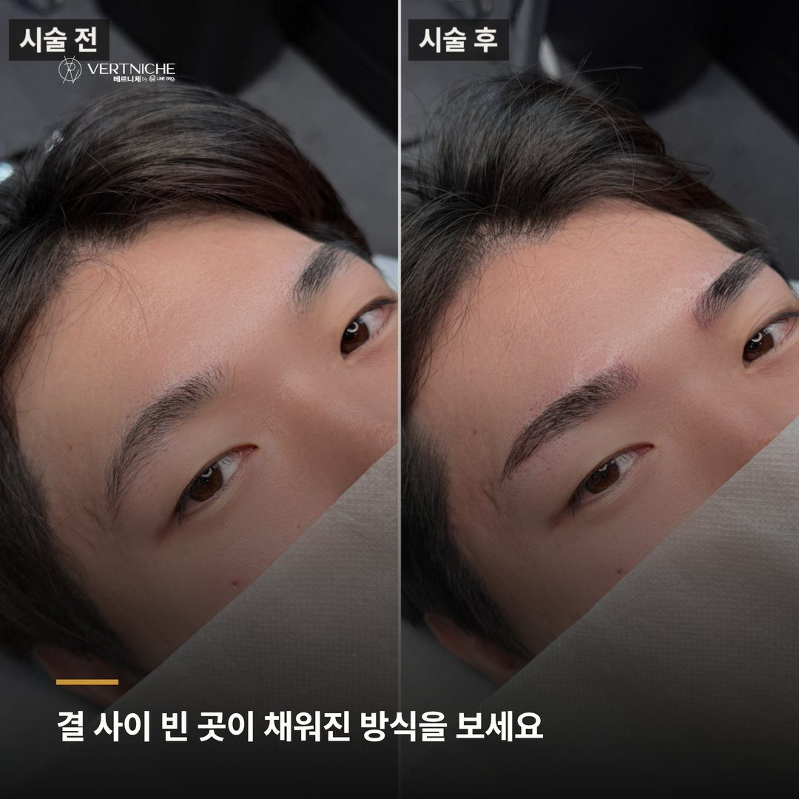
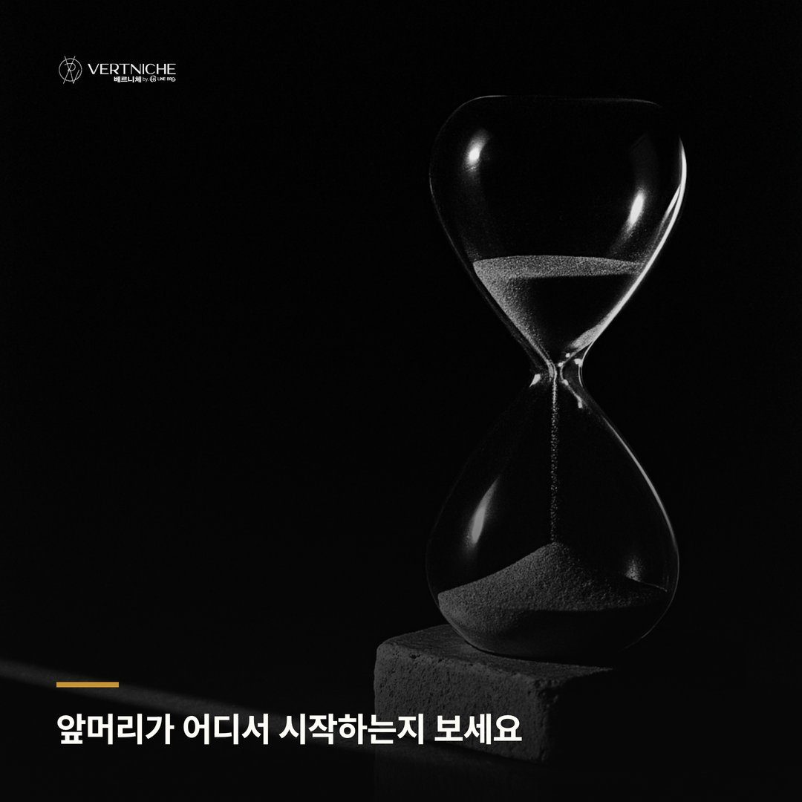
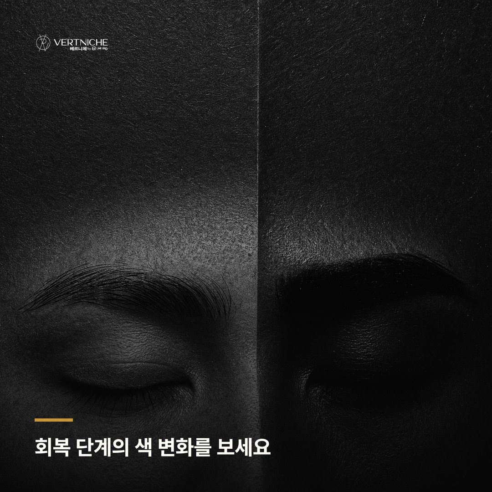

대구 눈썹문신 자연스럽게 고르는 법

리터치 꼭 와야 하냐고 먼저 물어보시는 분이 많은데, 사실 그 질문엔 함정이 있어요. 리터치가 포함되어 있다고 해서 무조건 오는 게 맞는 건 아니거든요. 오히려 잘 자리 잡은 눈썹에 리터치를 얹으면 색이 과해져서 부자연스러워지는 경우도 있어요.
베르니체는 대구에서 7년째 운영하면서 5,500명 넘게 케어해왔어요. 그동안 엠보에 대해 헷갈려 하시는 지점이 거의 비슷하더라고요. 당일 시간이 어떻게 흘러가는지, 리터치를 언제 잡아야 하는지, 이 두 가지를 중심으로 정리해봤어요.
엠보가 시간이 걸리는 이유
엠보는 기계로 면을 채우는 방식이 아니라, 얇은 날로 결을 한 올씩 그어 넣는 수기 방식이에요. 가까이서 봐도 자연스러운 결이 나오는 게 장점인데, 그만큼 손이 많이 가죠. 결을 몇 개 넣느냐, 얼굴 골격에 맞춰 어떻게 흐르게 하느냐에 따라 시간이 달라지기 때문에 "몇 시간이에요?"라는 질문에 딱 떨어지는 숫자를 말하기가 어려운 거예요.
한 가지 미리 말씀드리면, 엠보는 결을 살리는 방식이라 원래 눈썹숱이 어느 정도 있는 분한테 잘 맞아요. 숱이 거의 없거나 넓은 면을 채워야 하는 경우라면 결 방식보다 다른 방식이 나을 수도 있어서, 이건 얼굴 보고 상담에서 방향을 잡는 게 맞습니다.
당일 시간은 이렇게 흘러가요
전체 일정은 한 시간 안팎으로 잡으시면 돼요. 다만 이 한 시간이 바늘 대는 시간만 뜻하는 건 아니에요.
오시면 먼저 지금 눈썹 상태랑 얼굴형을 같이 봐요. 미간 넓이, 눈두덩 각도, 이마 라인을 보면서 결이 어느 방향으로 흘러야 자연스러운지 펜으로 그려가는데, 저는 거울 같이 보면서 몇 번씩 다시 잡거든요. 결 방향이 여기서 정해지면 시술은 그 길을 따라가는 거라, 디자인이 어설프면 아무리 곱게 그어도 결과가 흔들려요.
디자인이 정해지면 진정 크림을 올리고 30분 정도 기다려요. 이 시간 덕분에 실제 결을 넣는 작업은 견딜 만해지는 거예요. 크림이 자리 잡으면 그때부터 한 올씩 결을 그어 넣는데, 이 구간이 엠보의 핵 시술 부분이에요. 상담과 디자인, 진정 대기, 결 시술까지 다 합쳐서 한 시간 남짓이니, 앞뒤로 여유를 두고 오시는 게 좋아요.
리터치는 왜 필요하고 언제 하는 걸까
엠보는 결을 얕게 심는 방식이라, 첫 시술에서 넣은 선이 회복 과정에서 부분부분 연해지는 경우가 있어요. 피부 특성상 어떤 결은 진하게 남고 어떤 결은 흐릿하게 빠지기도 하거든요. 그 밀도 차이를 채워서 균형을 맞추는 게 리터치예요.
시점 기준은 28일 이후예요. 피부 재생주기가 한 바퀴 돌아야 최종 색이 자리 잡는데, 그 전에는 색이 진해졌다 연해졌다 하는 구간이라 판단하기가 일러요. 15일쯤엔 오히려 연해 보여서 "다 빠진 거 아닌가" 싶으실 수 있는데, 28일 지나면 속색소가 올라오면서 다시 또렷해지는 경우가 많더라고요. 리터치는 최소 28일 기다렸다가 잡으세요.
착색이 잘 됐으면 굳이 리터치 안 해도 돼요
베르니체는 리터치 1회가 포함이에요. 그런데 솔직하게 말씀드리면, 첫 시술에서 착색이 잘 잡히는 분이 10명 중 8~9명이에요. 리터치가 꼭 필요한 분은 1~2명 정도거든요.
착색이 잘 됐는데 굳이 리터치를 얹으면 색이 과하게 진해져서 부자연스러워지는 경우가 있어요. 저는 잘 자리 잡았으면 안 하는 게 낫다고 보는 편이에요. 자연스럽게 얹힌 눈썹이 잘한 거지, 진한 눈썹이 잘한 게 아니거든요.
28일 지나서 보고, 결이 비어 보이거나 밀도가 안 맞는 부분이 있으면 그때 오시면 돼요. 괜찮으면 그대로 두시면 되고요. 유지기간은 보통 1년에서 1년 반 정도인데, 그 뒤에 다시 옅어지면 그때 관리 오시는 걸 권해요. 6개월 안에 자꾸 덧대는 건 잉크가 덜 빠진 상태라 오히려 말리는 편이에요.
자주 오는 질문
Q. 엠보랑 콤보(반영구)랑 시간 차이가 많이 나나요? 엠보가 결을 한 올씩 심는 방식이라 면을 채우는 방식보다 손이 더 가는 건 맞아요. 다만 당일 일정의 대부분은 상담·디자인·진정 시간이 차지해서, 체감상 큰 차이가 나진 않아요. 한 시간 안팎으로 잡으시면 됩니다.
Q. 직장 다니는데 시술 후 바로 출근해도 되나요? 당일 출근 자체는 가능해요. 다만 시술 직후엔 결이 또렷하게 보이고, 2~4일차엔 색이 더 진해지는 구간이에요. 딱지 생기는 5~7일차만 물이랑 땀 조심하시면 일상생활엔 큰 지장 없어요. 이 흐름을 미리 알고 오시면 당황하지 않을 거예요.
Q. 리터치 안 오면 손해인가요? 아니에요. 착색이 잘 됐으면 안 오시는 게 오히려 자연스러운 결과예요. 포함이라 아깝다는 생각에 굳이 진하게 덧대면 나중에 빼기가 어려워요. 28일 뒤에 보고 필요할 때만 판단하세요.
포스팅 요약
• 엠보 당일 일정은 상담·디자인·진정 대기 포함해서 한 시간 안팎
• 리터치 기준 시점은 28일 이후, 착색이 잘 됐으면 안 해도 돼요
• 6개월 안에 자꾸 덧대는 건 권하지 않고, 1년~1년 반 뒤 자연스럽게 옅어지면 그때 관리
눈썹 상태나 방향이 궁금하시면 편하게 문의 주세요. 얼굴 보고 엠보가 맞는지부터 같이 확인해드릴게요.
대구눈썹문신 잘하는곳 고르는 기준, 원장이 뭘 보는지가 답이에요
대구 눈썹문신 상담부터 시술까지 어떻게 진행되나
대구 눈썹문신 해외 거주 고객 리터치와 피부관리 기준
더 보기 / 상담
남자관리 사례랑 눈썹문신 결과는 인스타에 계속 올리고 있어요. 시술 사진이랑 관리 팁은 아래 링크에서 더 보실 수 있습니다.
시술 사진









이 글은 네이버 블로그에도 같은 내용으로 올라가 있습니다.